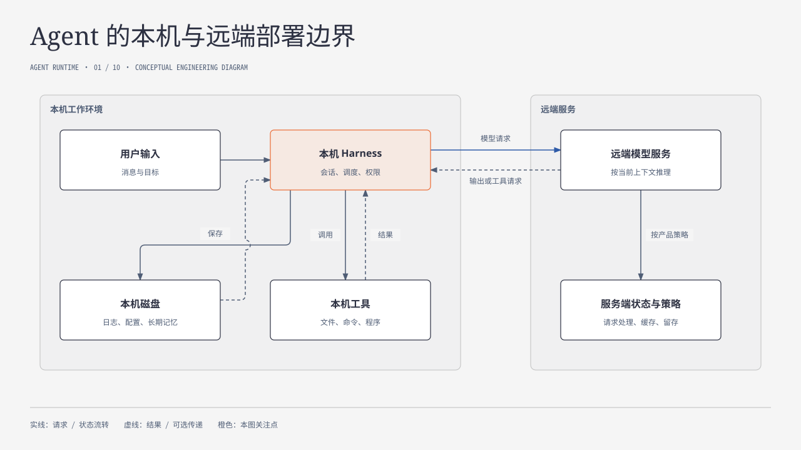
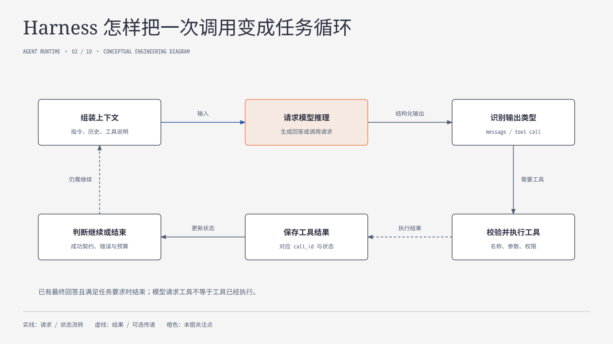
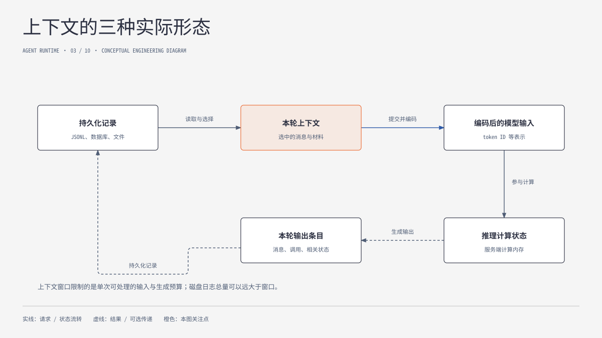
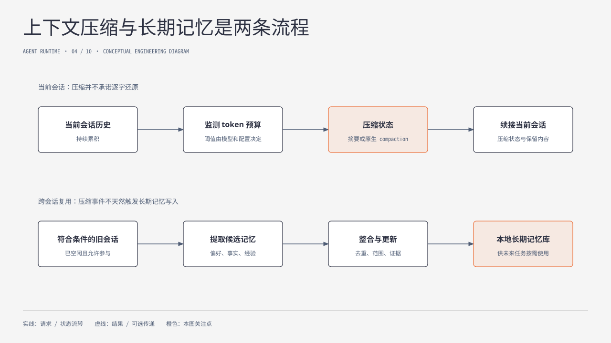
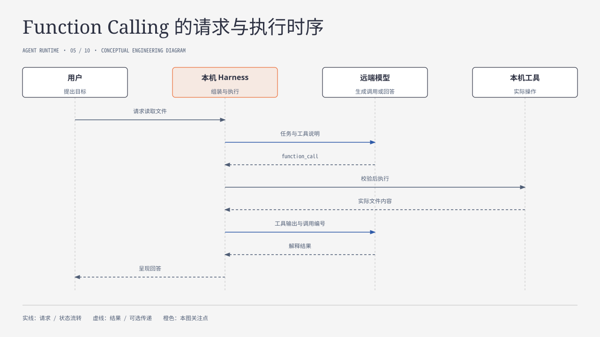
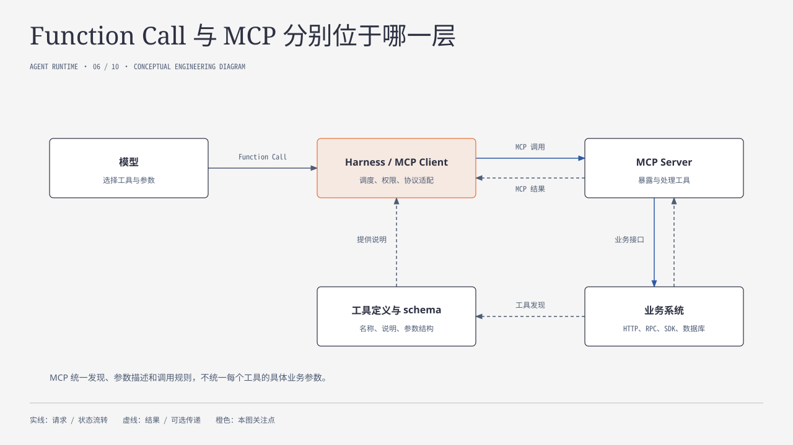
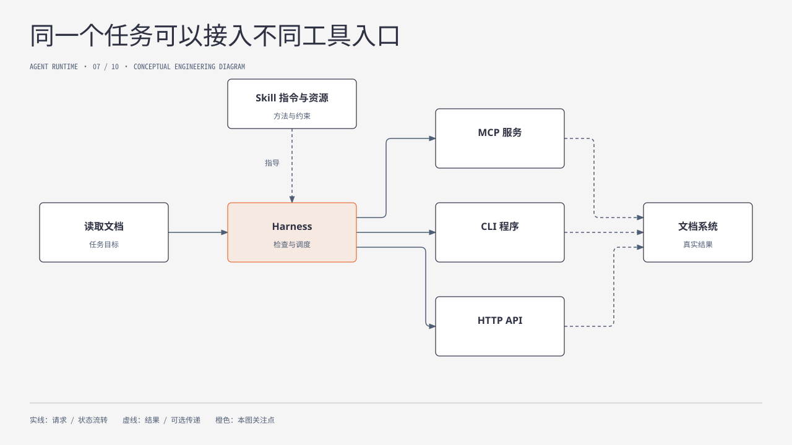
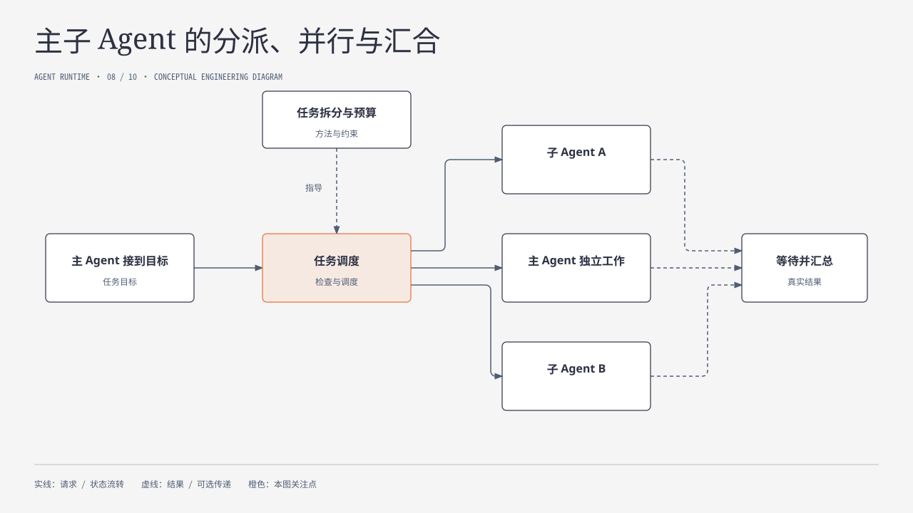
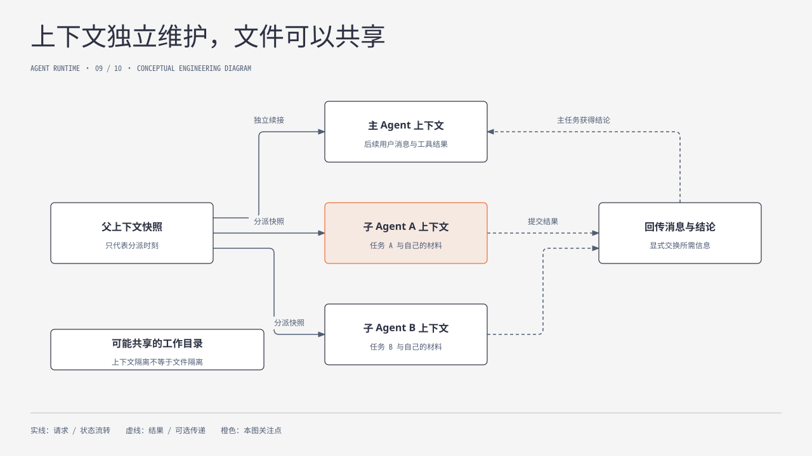
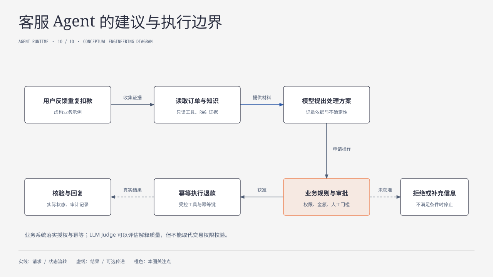

图形使用原生 Draw.io 节点与连线，可打开源文件继续编辑。图集按灰橙色方案制作；浏览器可直接查看 SVG。
下载多页 Draw.io 源文件

本机运行框架组织状态并执行本地工具，远端服务处理模型推理；本地持久化不等于远端从未处理相关数据。

运行框架在组装上下文、模型推理、输出路由、工具执行与记录之间循环，并按成功契约结束任务。

持久化记录被选取和组织后成为本轮输入，再在推理服务中转换为模型可处理的表示。

压缩为当前会话续接腾出空间；长期记忆从符合条件的旧会话中提取未来可复用的信息。

模型生成调用请求后，由执行环境落实操作；实际结果返回模型后，模型才能继续依据结果作答。

模型表达工具调用意图，运行框架中的 MCP 客户端连接工具服务，服务再访问实际业务系统。

Skill 提供完成任务的方法，Function Calling 表达调用请求，Harness 可以接 MCP、CLI 或直接 HTTP 实现。

子任务可以与主任务独立工作重叠，但依赖结果的后续步骤必须等待相应任务完成。

父对话快照可以成为多个任务的起点，之后各自累积上下文，必要信息经消息或结果回传。

模型分析证据并提出方案，退款等业务写入须经过确定性规则、审批和幂等执行，最后核验真实结果。